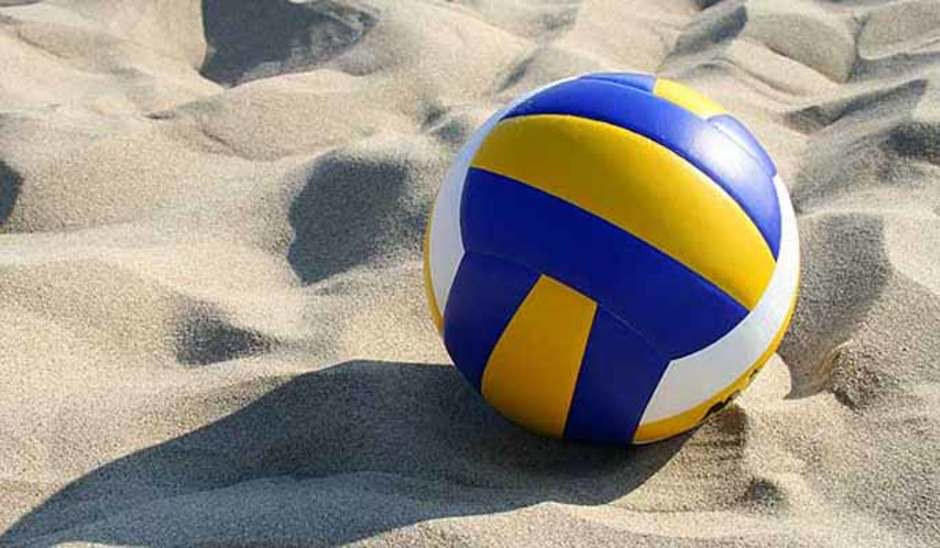

Волейбол

Я всегда любил всевозможные игры с мячом. В школе нас обучали многим играм, рассказывали правила и стратегии. Я долго не раздумывал и сразу понял, что волейбол - это одна из самых интересных игр.
Мне нравится, что в игре участвует две команды, как и во многих спортивных играх с мячом. Но особое отличие, например, от футбола заключается в том, что команда играет как одно целое. Здесь нет такого большого поля, поэтому игроки команды в любой момент могут тебя поддержать.
Еще один плюс этой игры - это правила. Все достаточно просто и понятно, не нужно долго вникать. Две команды, игра на счет, основная задача - забить гол противникам. В переходах по полю также нет никакой сложности. В волейболе нет постоянных ролей и обязанностей. Каждый игрок команды сможет постоять в разных зонах поля: под сеткой, в центре и на месте подающего.
Я люблю эту игру за то, что она достаточно спокойная. Во время игры нет времени отвлечься, ты всегда сфокусирован на мяче и на действиях своего соперника. Ты отслеживаешь каждый удар, смотришь на угол подачи и следишь за тактикой соперника. В это игре важно понять стратегию противника, его сильные и слабые места.
Несмотря на то, что эта игра не требует большой выкладки сил и не нужно бегать по полю из стороны в сторону, все мышцы твоего тела все равно напрягаются. Игра в волейбол развивает большую часть мышц тела. Конечно, в первую очередь - это руки. Они всегда в напряжении, готовы принять удар соперника. Но ноги тоже принимают участие в игре, ведь прыгать приходится довольно часто.